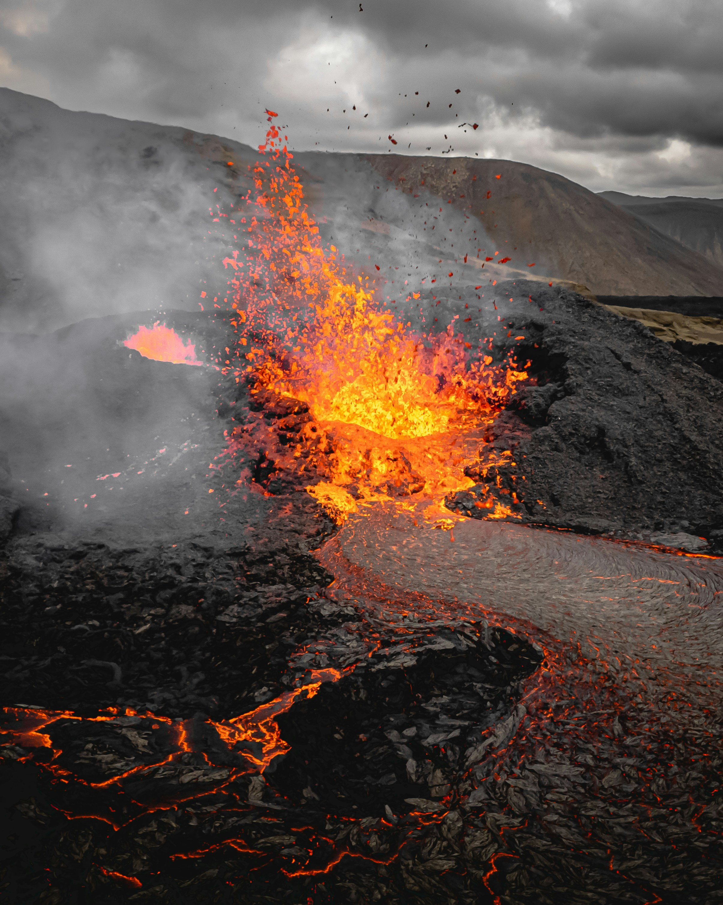
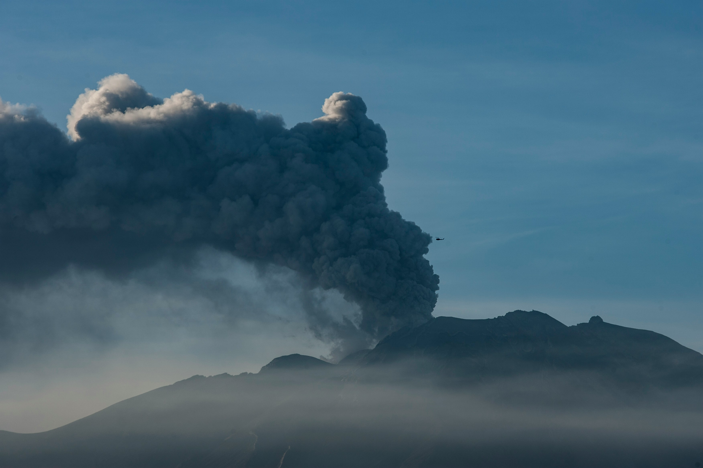
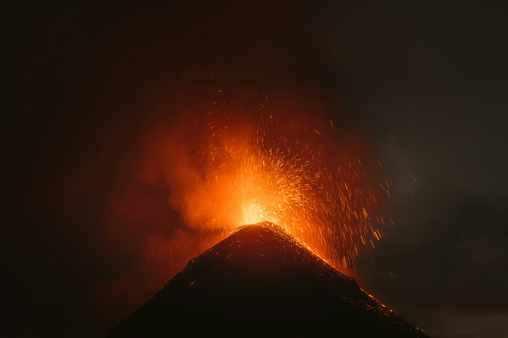

Effusive
Low-viscosity basaltic magma with low dissolved gas lets pressure vent freely, producing continuous, gently flowing lava instead of an explosion.
Danger: Low (VEI 0–1) — needs low viscosity and low gas content.
Molten rock, ash, and pressure reshaping the surface in minutes.
Magma's viscosity and dissolved gas decide how it erupts — five recognised styles, from gentle effusion to catastrophic Plinian columns, each defined by the conditions that produce it.
Low-viscosity basaltic magma with low dissolved gas lets pressure vent freely, producing continuous, gently flowing lava instead of an explosion.
Danger: Low (VEI 0–1) — needs low viscosity and low gas content.
Very fluid basalt with slightly more trapped gas erupts as sustained lava fountains and rivers, building shield volcanoes layer by layer.
Danger: Low–Moderate (VEI 0–1) — needs very low viscosity and low-to-moderate gas escaping in rapid, rhythmic bubbles.
Gas accumulates in discrete pockets within moderately viscous magma, bursting free every few minutes in short, separate explosions.
Danger: Moderate (VEI 1–2) — needs moderate viscosity and moderate gas trapped in isolated bubbles rather than escaping continuously.
A viscous, gas-choked plug seals the vent until pressure shatters it, blasting dense ash and ballistic blocks outward in short, violent bursts.
Danger: High (VEI 2–3) — needs high viscosity and high gas content sealed beneath a solidified plug.
Extremely viscous, gas-saturated magma drives a sustained, high-velocity blast that punches a towering ash column tens of kilometres into the stratosphere.
Danger: Extreme (VEI 4–8) — needs very high viscosity and very high gas content sustained under extreme pressure.

Lava fountains — Hawaiian-style eruptions throw fluid basalt tens of metres skyward in rhythmic bursts, building shield volcanoes layer by layer.

Ash plumes — Explosive eruptions loft pulverised rock and glass kilometres into the atmosphere, grounding aircraft and dimming skies for months.

Pyroclastic flows — Superheated gas and ash race downslope at highway speed, the deadliest hazard a volcano can produce.
Deep beneath the surface, molten rock accumulates in magma chambers, pressure and heat building relentlessly. Seismic tremors ripple across the region and the ground begins to swell—the volcano awakens.
Earthquake swarms accelerate while gases like sulfur dioxide surge from vents and cracks. These unmistakable signals confirm that magma is rising, pushing toward the surface with unstoppable force.
The mounting pressure finally shatters the rock above, and molten material explosively breaks through to the surface. Lava cascades across the landscape, ash plumes billow skyward, and entire regions are engulfed in devastating force.
The flows spread and gradually cool into new rock formations across the changed landscape. Ash settles across entire regions, and over time—slowly, inexorably—life returns and the land begins to heal.